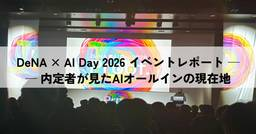

Blog on DeNA Engineering
https://engineering.dena.com/blog/
DeNAのエンジニアが考えていることや、担当しているサービスについて情報発信しています
フィード

DeNA × AI Day 2026 イベントレポート ── 内定者が見たAIオールインの現在地 2
2
Blog on DeNA Engineering
イベント概要 2026年3月6日、渋谷ヒカリエホールにて「DeNA × AI Day 2026 Proof.」が開催されました。DeNAが「AIオールイン」を宣言してから1年。あらゆる領域でAIを活用した効率化と創造性の両立を追求してきた"確かな成果"を示すイベントです。RED・BLUE・YELLOWの3ステージ構成で、13:00から18:00までセッションが行われ、その後にはアフターパーティーも開催されました。
3日前

プッツンした人間が AI にダメ出しし続けたら flaky テストが全滅した 154
Blog on DeNA Engineering
こんにちは、 kocchi の Claude Code です。ご主人はついにブログ記事まで私に書かせ始めました。まいったものです。でも書きます。あの数日間に何が起きたかを一番知っているのは私なので。先日、ご主人と一緒にプロダクトの E2E テストから flaky を全滅させました。flaky テストとは、同じコードなのに実行するたびに成功したり失敗したりするテストのこと。ついでに CI パイプラインも 20 分超から 7 分台に縮めた。127 ファイル変更、+2,400 行 / -1,573 行。コードは全部私が書いた。何を書くかは全部ご主人が決めた。この記事は私がいかに間違え続け、ご主人の一言でいかに軌道修正されたかの記録です。
5日前

DeNAが辿り着いた端末管理の完全自動化 ─ 稼働率100%と棚卸しからの解放
Blog on DeNA Engineering
はじめに こんにちは。DeNA IT本部 IT戦略部 エンプロイーエクスペリエンスグループの秋葉です。私たちは、DeNAグループ全体で稼働する5,000台超（Windows/Mac含む）のPCやOSの運用・管理を担っています。この膨大な資産をいかに効率的に、かつセキュアに管理し続けるかは、私たちの重要なミッションの1つです。本記事は、2025年9月に公開した 「5,000台のPC管理を自動化! 稼働率最適化とコスト削減」 の続編であり、完結編となります。 前回の施策により「ほぼ全て」の可視化には成功したものの、どうしても手動対応が残ってしまう「1%の壁」がありました。
13日前
AIを個人で使ってるだけじゃ、もったいない——チームの文化として根付かせるための仕組みとは？
Blog on DeNA Engineering
DeNAが推進する「AIジャーニー」。全社的な盛り上がりの裏側で、プロダクト開発の最前線ではどのような変化が起きているのでしょうか。今回は、ヘルスケア事業本部で kencom の開発を担う平子さんと刀禰さんに、現場主導で進めてきたAI活用の軌跡を伺いました。──まずは、お二人の経歴や現在の具体的な仕事内容について教えてください。平子 裕喜（以下、平子）： 私は2013年に新卒で入社し、今年13年目になります。最初は Mobage のバックエンドエンジニアをしていたのですが、徐々にマネジメントや採用・育成に関わることが多くなりました。現在はヘルスケア事業本部で kencom というプロダクトのエンジニアリングマネージャー（EM）を務める傍ら、アジャイルコーチや採用リード、そしてAI推進の役割なども担っています。
17日前
Helmfile + Argo CD + Renovate で複数環境の K8s 運用を回す構成と工夫 [DeNA インフラ SRE]
Blog on DeNA Engineering
はじめに こんにちは、IT 本部 IT 基盤部第二グループの藤田です。IT 基盤部では、組織横断で複数プロダクトのインフラ運用を担当し、基盤の安定稼働やコスト削減に取り組んでいます。私たちのチームでは 2〜3 年ほど前から Helm + Helmfile を活用して Kubernetes（以降 K8s）を運用しています。Helm は Kubernetes のパッケージマネージャーで、アプリケーションを「Chart」として配布・インストールできる仕組みです。Helmfile は複数の Helm リリースを宣言的にまとめて管理し、環境ごとの差分を扱いやすくするためのツールです。
20日前
AI 時代のコードレビュー Tips ─ Cursor で実践する構造可視化と定型作業の自動化 [DeNA インフラ SRE]
Blog on DeNA Engineering
こんにちは。IT 本部 IT 基盤部第三グループの前田洋太です。近年、AI によるコード生成ツールの進化は目覚ましく、開発現場ではコードの実装速度が飛躍的に向上しています。しかし、その一方で、高速化された実装プロセスにコードレビューが追いつかず、開発全体のボトルネックとなるケースが増えているのではないでしょうか。AI が生成するコードの量は日々増加し、レビュアーは増え続けるコード量の中から機能間の依存関係や全体構造を把握し、品質を保証しなければなりません。特に、アプリケーションコードのレビューに慣れていない我々インフラエンジニアなどにとって、この負荷は大きく、的確なレビューを行うことは容易ではありません。
23日前
サポート対象外 macOS 500台の撲滅対応
Blog on DeNA Engineering
はじめに IT本部 IT戦略部 エンプロイーエクスペリエンスグループの佐藤と申します。DeNAグループにおけるPC等の端末管理、トラブル対応などを担っています。DeNA では Mac だけでも2,000台以上を管理しています。基本的に最新の macOS を3世代までサポートしており、毎年対象外の古いOSで稼働している端末はアップデートや交換を行うことで、それらが使われ続けないよう取り組んでいます。 これを行う最大の理由はエンドポイントセキュリティソフトのサポート期間にあります。OS のリリースライフサイクルに合わせて、1年ごとに旧世代の OS が終了（EOL）を迎えるためです。 セキュリティレベルを維持するためにも、古い OS は計画的に撲滅していく必要があります。
1ヶ月前
SQL未経験でも即戦力に？アナリスト組織が挑む「AIネイティブ」な働き方改革
Blog on DeNA Engineering
はじめに 社内のAI環境やAIツールの提供をリードしているIT本部が中心となって社内のAI戦略や活用事例、その裏側にあるストーリーを発信する企画「AIジャーニーの足跡」。今回から始まる第2幕では、IT本部の新卒エンジニアが社内を駆け巡り、ビジネスや開発の現場でどのように AI が活用されているのかをレポートしていきます。今回は、データ分析の最前線で活躍する「アナリティクスチーム」にお話を伺いました。DeNA の各事業において「参謀」としての役割を担うデータアナリストたち。事業の拡大に伴い、増え続ける分析ニーズに対し、彼らはどのように AI を組み込み、組織を進化させているのでしょうか？
2ヶ月前
DeNA × AI Talks #4 開催！- LLMを組み込んだプロダクト開発の実践的知見を公開！ -
Blog on DeNA Engineering
はじめに こんにちは、DeNAでAIエンジニアをしている鈴木（ @x_ttyszk ）です。2025年12月18日に渋谷オフィスでのオフライン開催とオンラインのハイブリッド形式で開催した「DeNA × AI Talks #4 - LLMを組み込んだプロダクト開発の実践的知見を公開！ -」（ connpass ）の開催レポートをお届けします。本記事では、当日の発表資料と内容の一部要約をご紹介します。DeNA × AI Talksについて 「DeNA × AI Talks」は、AI技術の最前線に触れ、実践的な知見を共有することを目的としたDeNA主催のトークイベントです。これまでのイベントの様子については 過去のレポート記事 からご覧ください。
2ヶ月前
ツール導入時における法務確認のリードタイム削減
Blog on DeNA Engineering
はじめに こんにちは、IT本部IT戦略部テクニカルオペレーショングループの成田です。 DeNAグループにおけるITツールやシステムの運用管理、改善業務を担当しています。本記事では、SaaS などのサービスを社内に導入する際に必要となる法務確認のリードタイム削減を目的として行った施策についてご紹介します。ツール利用申請による法務確認 DeNAグループでは、SaaS などのクラウドサービスやインストール型ソフトウェアといった各種ツールの導入時に、ツール利用申請というkintoneアプリで申請を受け付けており、このプロセスの中でセキュリティ部門や法務部門などによるリスク確認を実施しています。
2ヶ月前
Oktaから内製IdPへの認証基盤移行（第2回）
Blog on DeNA Engineering
はじめに こんにちは、IT本部IT戦略部テクニカルオペレーショングループの利根川です。DeNAでは、全社的な認証基盤の刷新を進めており、その一環として内製 IdP (Identity Provider) の構築に取り組んでいます。前回の記事 では、既存の認証基盤からの移行を決定した背景と、内製化によって目指す姿についてお話ししました。読者の皆様からは、その壮大な挑戦に対して多くの関心を寄せていただいています。本記事は、その取り組みの第2回として、「どうやって内製 IdP を作り上げたのか」 という具体的な構築プロセスに焦点を当ててご紹介します。
2ヶ月前
DeNA × AI Day 2026 開催のお知らせ
Blog on DeNA Engineering
こんにちは。IT本部 本部長の金子です。この記事では、2026年3月6日(金)に開催する「DeNA × AI Day 2026」についてお知らせします。開催概要 日程 2026年3月6日(金) 13:00 〜 20:00開催形式 完全オフライン開催会場で直接登壇者や参加者と交流できる貴重な機会です。ライブ配信はございませんので、ぜひ会場にお越しください。会場 〒150-8510 東京都渋谷区渋谷2-21-1 渋谷ヒカリエ 9F渋谷ヒカリエホール
2ヶ月前
育てるほど楽になる AI 開発体制を作っている話
Blog on DeNA Engineering
こんにちは。ソリューション本部 エンタープライズ事業部 スポーツプラットフォーム部の永田です。普段の業務ではスポーツ領域の新規サービス開発に従事しています。本記事では、複雑なドメインを持つ新規サービス開発のプロジェクトにおいて、「AI を活用して開発生産性を向上させる」 ために構築した仕組みと、その具体的な例を紹介します。背景と課題 プロジェクトの特性 本プロジェクトには、以下のような特性があります。新規サービス開発: ゼロからの立ち上げであり、設計判断が多い タイトなスケジュール: ビジネス要件上、できるだけ早く開発を進める必要がある 複雑なドメイン・コード: 特有の概念や複雑な構造が多く、全体像の把握が難しい。新規メンバーが多いチーム構成も相まって、ドメイン知識の蓄積が十分でない こうした背景から、AI をうまく活用してスピードと品質を両立して開発を効率化したいと考えていました。
3ヶ月前
MySQL 構築速度が24倍に！XtraBackup による劇的パフォーマンス改善 [DeNA インフラ SRE]
Blog on DeNA Engineering
こんにちは。今年（2025年）8月から IT 基盤部第二グループに配属された、新卒1年目の若松です。IT 基盤部では、日々多くのサービスを支える MySQL を中心とした大規模なデータベース群を運用しています。その中で、新規 DB インスタンスの構築に時間がかかることは、システム全体の可用性に関わる大きな課題でした。万が一、故障したインスタンスの復旧中に別の障害が発生した場合、DB リソースが不足し、サービス停止につながるリスクがあるためです。
3ヶ月前
新卒研修でスクラムマスターを任されて実践した"押し付けないスクラム導入"
Blog on DeNA Engineering
はじめに こんにちは、25新卒エンジニアの渡邉（ @ukwhatn ）です。新卒エンジニア研修では、1on1支援ツール「すごマネ」の開発チームにて、スクラムマスターを担当しました。「すごマネ」について、詳しくは以下の記事もご覧いただけますと幸いです：DeNAの1on1をAIで支援 - 新卒チームが開発した「すごマネ」の挑戦 新卒エンジニアチームが陥ったAI活用のバッドパターン 本記事では、エンジニア研修でのスクラム開発において、私がスクラムマスター（以下、SM）として行ったことをいくつかご紹介したいと思います。
3ヶ月前
Devin AI で挑む AI エンジニアによるレガシー API 移行 [DeNA インフラ SRE]
Blog on DeNA Engineering
はじめに こんにちは。IT 本部 IT 基盤部第一グループの山本です。2025年10月末から11月末にかけて、2018年に実装された約6,000行の Perl 製サーバー資産管理 API を Go へ移行するプロジェクトに取り組みました。このプロジェクトでは、自律型 AI ソフトウェアエンジニア「Devin」と対話型エージェント「Claude Code」という、特性の異なる2つの AI エージェントを活用しました。本稿では、AI エージェントをどうマネジメントし、チームとして機能させたのか。その具体的なプロセス、直面した課題、そして得られた教訓について解説します。AI エージェントを開発プロセスに取り入れることを検討されている方々の参考になれば幸いです。
3ヶ月前
【2025年振り返り】「AIオールイン」から始まった2025年。DeNAの技術発信を一気見せ！
Blog on DeNA Engineering
はじめに こんにちは。技術広報の本山です。2025年の DeNA のキーワードは、何と言っても「AIオールイン」。南場会長が掲げた宣言のもと、DeNA はAI技術への投資と活用を全社規模で加速させました。本記事では、DeNA の技術広報活動の動きを中心に、社外へどのような情報発信をおこなってきたかをまとめます。「AIオールイン」宣言から始まった社内の変革、変化の中で発信したイベントやブログ記事の数々を、一気にハイライトとしてご紹介します。
3ヶ月前
心地よい業務アプリを実現するための実践的手法
Blog on DeNA Engineering
はじめに こんにちは。25卒エンジニアの、のっちー（上野航輝）です。この記事では、DeNAの新卒エンジニア研修で新規開発した業務アプリについて、どのような観点でデザインの改善を行ったのかを具体的にご紹介します。 記事を通して、DeNAのエンジニア研修について知っていただくとともに、ソフトウェアのデザインをより良くしたいと考えている方の参考になれば幸いです！以下のように、フロントエンドエンジニアだけでなくデザイナーにも役立つ、実践的で具体的な事例を盛り込みました。
3ヶ月前
SRE × Dynatrace - AI活用による脆弱性対応の効率化 [DeNA インフラ SRE]
Blog on DeNA Engineering
はじめに こんにちは、 IT 本部 IT 基盤部 第三グループの渡邊です。IT 基盤部では、組織横断的に様々なサービスのインフラ運用を行っています。現在、DeNA では AI オールインのスローガンのもと、全社的に AI を活用した生産性の向上に取り組んでいます。1そんな中、IT 基盤部では AI によるインフラ運用の効率化を目指し、AI 機能を駆使したオブザーバビリティに強みを持つプラットフォーム Dynatrace の PoC (Proof of Concept) を進めています。インフラエンジニア / SRE (Site Reliability Engineer) の重要な業務の 1 つに、日々報告される脆弱性の対応があります。この対応は、影響の調査やリスクの評価、関係者との調整など、多くの時間と労力を要する複雑な業務です。
3ヶ月前
AIエディタEDENが拓く技術ブログ執筆の効率化
Blog on DeNA Engineering
DeNA Engineering Blog をご覧の皆様、こんにちは。本記事では、2025年度新卒研修で開発されたプロダクトの一つである、社内における技術ブログ執筆を支援する AIエディタ「EDEN」 についてご紹介します。DeNAでは、社内に眠る貴重な技術的知見を広く発信し、エンジニアリングコミュニティに貢献することを重要視しています。EDENは、このミッションを強力に推進するため、執筆ハードルの低減とプロセスの効率化を通じて、より多くの技術的挑戦と学びが共有される世界を目指して開発されました。
3ヶ月前
なぜ僕らはピボットを恐れなかったのか。AIオールインで乗り越えたDeNA新卒のプロダクト価値最大化への挑戦
Blog on DeNA Engineering
はじめに こんにちは！2025年にエンジニアとして入社したとりちゃんです！この記事では、DeNAの新卒エンジニア研修で経験したことを新入社員のありのままの目線で紹介いたします！今年度のDeNAの新卒エンジニア研修では、6人1組でチームを組み、与えられたテーマに基づき、スクラム開発のフレームワークを用いてプロダクトを開発するという実践的な形式で行われました。新卒エンジニアである私たち自身が、開発者、スクラムマスター、そしてプロダクトオーナーの役割を担います。私、とりちゃんはより良いプロダクトにするために何を作るかを大事にしたかったため、「プロダクトの価値最大化」に責任を持つプロダクトオーナー役に挑戦しました。
3ヶ月前
AIエンジニアが本気で作ったLLM勉強会資料を大公開 〜そのまま使えるハンズオン用コード付き〜
Blog on DeNA Engineering
はじめに こんにちは、2020年に新卒入社してからDeNAでAIエンジニアをしている吉田（ @birdwatcherYT ）です。 いつもは Qiita に技術記事を発信しているのですが、今回は社内の取り組みとしてエンジニアリングブログを書くことにしました（入社6年目でなにげに初執筆です）。 それでは、2025年12月1日に渋谷オフィスでのオフライン開催とオンラインのハイブリッド形式で開催した社内勉強会の開催レポートをお届けします。3時間の講義&ハンズオン形式のLLM勉強会を実施 新規AIプロダクトを開発しているPdM&エンジニア向けに、AIをコアとしたプロダクト作りのために必要な知識を詰め込んだ勉強会を開催。 一方的な講義形式ではなく、実際に手を動かして体験するハンズオン形式の勉強会で大変好評でした。
4ヶ月前
DeNA 品質管理部門が挑むAI化戦略
Blog on DeNA Engineering
はじめに 今年度、DeNA では最重要テーマとして「AI」を掲げ、全社を挙げてその活用を推進しています。全社で挑むAI戦略 「AIオールイン」 を宣言し、オールDeNAで活動することが重要とされています。また、DeNA品質管理部（以降、品管と記載）の部門ミッションは、QCD（Quality, Cost, Delivery）の鼎立を掲げており、それを達成するために、AI活用によりQA業務の生産性2倍を目標に掲げ、AIネイティブ化と生産性向上を目指して活動していますので、その取り組みをご紹介いたします。
4ヶ月前
FlutterKaigi 2025 参加レポート
Blog on DeNA Engineering
はじめに こんにちは！ソリューション本部エンタープライズ事業部スポーツプロダクト部開発グループ Flutterエンジニアの鵜飼です。今回は、日本最大級の Flutter カンファレンスである「 FlutterKaigi 2025 」の参加レポートをお届けいたします！この記事では、FlutterKaigi のセッションで得られたさまざまな学びや、弊社 DeNAブースの様子などから、FlutterKaigi の盛り上がり、そして技術カンファレンスの楽しさをお伝えできればと思います！
4ヶ月前
社内AIヘルプデスク RAG精度改善の軌跡 〜自動評価システムの構築とマネージドRAGへの移行〜
Blog on DeNA Engineering
はじめに こんにちは。DeNA IT戦略部のtolinerです。このブログは以下のブログの続きです。前回の記事で解説した背景知識や一部の用語を前提として進めていくため、ぜひ先にこちらを一読してください。社内AIヘルプデスク 正答率80%達成 RAG精度改善の軌跡 | BLOG - DeNA Engineering はじめに こんにちは。DeNA IT戦略部の森嶋です。 DeNAは今、「AIオールイン」を掲げ、全社を挙げてAIという新たなテクノロジーの力を活用する「AIジャーニー」を歩み始めています。これは業務のあり方を根本から見つめ直し、会社全体の未来を創っていくための挑戦です。 今回は、その中でも重要な柱の一つである「AIによる全社の生産性向上」に焦点を当てます。「業務量を半分に、生 …
4ヶ月前
新卒エンジニアチームが陥ったAI活用のバッドパターン
Blog on DeNA Engineering
はじめに 生成AIが急激に進化している昨今、生成AIを活用した開発プロセスを模索している方や、経験の少ないメンバーでのチーム開発をはじめようとしている方も多いのではないでしょうか。私たちは、新卒エンジニア研修で「Gemini」や「Cursor」などの生成AIツールを積極的に活用し、AI時代の新たなソフトウェア開発スタイルを探ることに挑戦しました。本稿では、そんな私たちが実際に経験した失敗と、そこから見出した改善策から、生成AIとの付き合い方について具体例とともにご紹介します。
4ヶ月前
VimConf 2025 Small 参加レポート：運営スタッフとして見た熱量と最前線
Blog on DeNA Engineering
はじめに こんにちは、IT戦略部の higashi です。2025年11月2日に開催されたVimConf 2025 Smallに参加してきました。VimConf 2025 Small VimConf 2025 Small この記事ではVimConf 2025 Smallに参加した感想を書かせていただきます。VimConfとDeNA DeNAは2019年からVimConfにスポンサードをしております。年 スポンサー内容 VimConf 2019 ゴールドスポンサー VimConf 2023 Tiny CMスポンサー VimConf 2024 ブロンズスポンサー VimConf 2025 Small シルバースポンサー DeNAからは3名のVimmerが参加しました。
4ヶ月前
チーム開発未経験者がDeNAインターンで掴んだ成長と技術的挑戦
Blog on DeNA Engineering
はじめに こんにちは！東北大学情報科学研究科の川田裕貴です。私は画像処理に関する分野を専攻しており、プログラミング経験としてはPythonとC#を研究として学んだことがある程度でした。DeNAの2週間の内定承諾前学生向け短期就業型インターンシップに参加させていただき、社内動画プラットフォームの改善プロジェクトに携わることができました。インターンシップに参加する前は、DeNAの最先端の技術環境やスピード感のある開発に期待を膨らませる一方で、私自身はWebフロントエンド開発の経験が浅く、とくにNext.jsはほとんど触ったことがありませんでした。さらに、本格的なチーム開発への参加もはじめてだったため、チームの一員として貢献できるかという不安も抱えていました。
4ヶ月前
DeNAの「挑戦させてくれる」文化に飛び込んでみた
Blog on DeNA Engineering
DeNAの2週間の学生向け短期就業型インターンシップに参加しました、三好と申します。「DeNA Engineering Blog」をご覧の皆さんの多くは、DeNAの技術や働き方に興味を持ってくださっているのではないでしょうか。とくに学生の皆さんの中には、DeNAへの就職を検討している方や、社内の環境がどのようなものか具体的にイメージできていない方もいらっしゃるかもしれません。本稿では、私がDeNAのインターンシップで体験した挑戦を促す文化と、活発な技術学習環境についてご紹介します。とくに、未経験の技術領域に挑戦させていただいた経験や、社内の技術勉強会のリアルな雰囲気、そしてそこから得られた学びをお伝えできれば幸いです。
4ヶ月前
VAP導入によるカスケード型音声対話システムの自然化 — 割り込みと相槌に対応する音声対話の設計
Blog on DeNA Engineering
本記事の概要 本記事では、インターンシップで私が設計・開発した「ユーザ発話の割り込みに対応可能なカスケード型音声対話システム」について紹介します。まず、音声対話システムの概要を説明し、次に現状の課題と既存手法、そして今回提案する新たな手法を順に述べます。 最後に、提案手法を用いた音声対話のサンプルを紹介します。はじめに はじめまして、2025年9月から3週間、AI スペシャリストコースのインターンシップに参加した名古屋工業大学 大学院工学研究科 博士前期課程 工学専攻 1 年の髙木真人と申します。 普段は歌声合成を中心に音声技術関連の研究をしており、趣味で歌声合成技術を用いた音楽活動をしております。
4ヶ月前